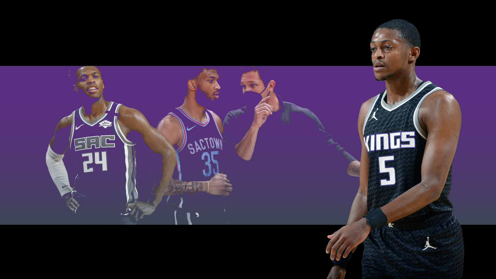

Sacramento Kings: Here we go again
As another season approaches, NBA fans around the world begin to get excited for the times ahead. However, in Alessio Conte’s household, there are only sad boy hours ahead.
Sean Carroll illustration
F rom 2013-14, when Michael Malone was fired, to the 2018-19 season with Dave Joerger, every offseason was a depressing ordeal littered with slides down in the draft, poor free agent signings and no hope for future wins.
Joerger seemed to turn that around in 2018-2019, leading to an offseason in which even The Deep Two NBA Podcast hosts Dante and Sean felt bullish about the up-and-coming Kings.
In true Kings fashion, the team fired Joerger, only finished with 31 wins the following season and have not looked to progress since after hiring coach Luke Walton.
So here we are again, with another offseason filled with poor trades and ‘meh’ signings, missed opportunities and a significant lack of hope.
There are certainly many negatives, a few positives and one big, fat ‘where the heck do we go from here?’. Let’s take a look at them all.
Negatives of the Sacramento Kings offseason
Non-tradable 'assets'
Non-tradable may be too stiff a term here, but Buddy Hield and Marvin Bagley have both had their value tanked to a level where the Kings may not acquire any value in return.
Bagley is coming into his fourth NBA season, a season which looks like a repeat of what the Chicago Bulls just went through with Lauri Markkanen.
Talks of extension and trade are limited, as the Kings do not seem to want to extend Bagley for the money he thinks he can command, nor do opposing teams want to trade any talent for him since he hasn’t been able to stay on the court and when he does, he’s objectively bad at basketball.
Hield on the other hand, went from signing a four year, $94 million contract as a key piece for a future Kings playoff team, to almost being traded for Kyle Kuzma and Montrezl Harrell.
A player on a borderline All-Star-level contract is often not hard to trade in today’s NBA landscape, but Hield provides the Kings with a significant conundrum. The only teams that are supposedly looking to acquire his talents are title challengers with no significant assets of similar value.
The defence
The Kings ranked 30th in defence last season, and did nothing in the offseason to remedy that fact outside of drafting 6’0” guard Davion Mitchel (more on him later). Unfortunately for Kings fans, a short and dynamic defensive point guard will never be able to truly influence a game on the defensive end against the 6’10” forwards that currently dominate the league.
I was very cautiously optimistic when Sacramento re-signed Richaun Holmes to a four year, $55 million contract this offseason, genuinely fearing a four year, $80 million contract was coming down the pipeline. However, no matter how hard Holmes seems to play and defend, his impact is almost always negative on average, and Tristan Thompson as a backup is a shocking attempt at a solution.
One more year into the Walton system may improve the team defence a shred, but any significant step into the top 20 or even top 25 defences doesn’t seem remotely likely.
The coach
Luke Walton is the second winningest coach in Sacramento Kings history… he has a losing record as a Kings coach.
Let that sink in.
Walton is widely regarded as a poor coach, riding on the coattails of his stint replacing Steve Kerr coaching one of the greatest basketball teams ever assembled. In hindsight, I struggle to believe that Walton even coached that team at all, rather the team just went through the motions and won all their games due to the system Kerr had built and left in place.
This offseason was the Kings’ prime opportunity to cut ties and move on to another one of the prime candidates available, but now we’re stuck with another season of the Walton experience. Yipee?
Positives of the Sacramento Kings offseason
The three guards
De’Aaron Fox is coming off a borderline All-Star season. With another offseason under his belt and his drive to constantly be a better player, this may be the season that he sees his shooting percentages stabilise and overall play improve yet again.
Tyrese Haliburton had an impressive rookie season that left many teams in the lottery wondering why they didn’t just draft him. He finished last season shooting over 40 percent from three on 5.5 attempts per game, displayed genuine ball handling and playmaking skills as well as ‘a good head on his shoulders’, as my nonna would say.
This most recent draft, we added Davion Mitchel, a player who was every NBA draft guru’s darling of the most recent Summer League. Mitchel had countless defensive highlights (yes, defensive highlights do exist) and also shot a reasonable three-point percentage, as he did in his final season at Baylor.
The Kings may decide to employ a potential three-headed monster like the Isaiah Thomas/Goran Dragic/Eric Bledsoe era of the Phoenix Suns or the Chris Paul/Dennis Schroeder/Shai Gilgeous-Alexander Oklahoma City Thunder. They may decide to stagger the minutes across the entire game. Either way, it seems like the Kings will finally be able to have competent offences led by genuine talent for 48 minutes per game.
The Barnes decision
Harrison Barnes is a good NBA player. The stability he has provided for the Kings in the past few seasons cannot be understated, and unless general manager Monte McNair decides to throw an overly large bag of money at Barnes, the Kings finally have a mid-level value piece whether they decide to trade or keep him.
Barnes had shown no interest in leaving the Kings, but rumours had his value at the mid-season trade deadline last season at supposedly a first-round pick and solid player. I firmly believe that value will remain similar in this season as Barnes enters the second-last year of his Kings contract.
Although a good young player and a first-round pick has in the past been too tantalising a deal to pass on, retaining Barnes is the best course of action and the much needed veteran presence he provides will continue to be his most key skill.
Where the heck do we go from here?
As currently constituted, this Kings roster has no clear direction. There is no stockpiling of future assets (20 years of rebuilding being long enough, you would hope) and no clear defensive or offensive strategy that has found relative success.
Fellow contributor for The Deep Two and one half of The JVG NBA Tribute Show, Lukas Petridis asked me how I would describe the Kings and I said:
“I hope they’re looking to build a good culture, between Fox, Mitchell, Holmes, Barnes and Haliburton. They play hard and care. Their only issue is still having malcontents Hield and Bagley as well as the unliked Walton in charge… So I guess we’re halfway there?”
A clear direction can be carved out by McNair, but he has a lot of work to do so.
No matter what he does though, it’s going to be another long season for me.